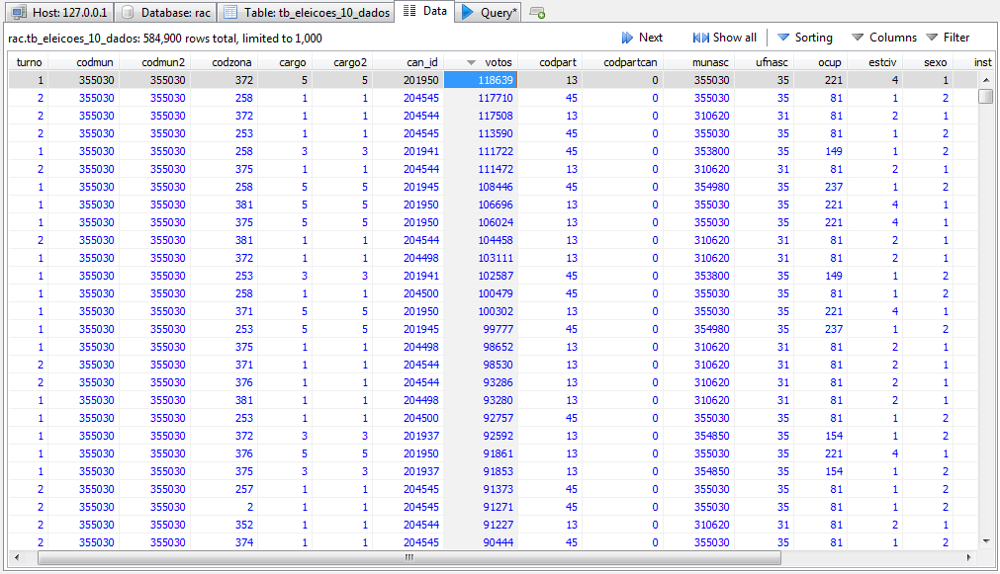
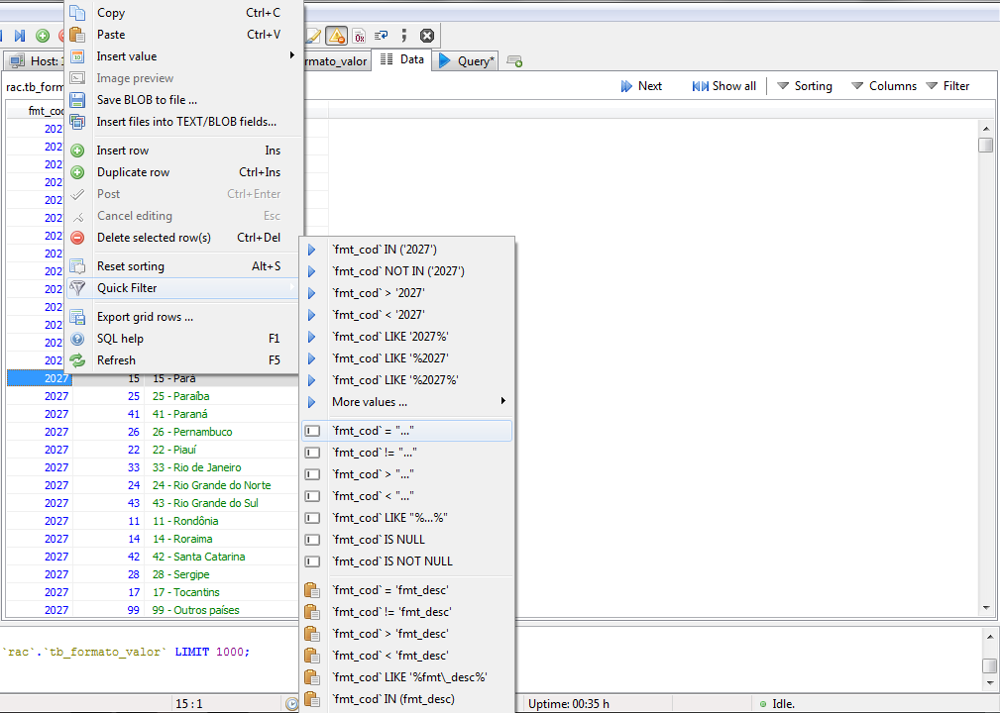
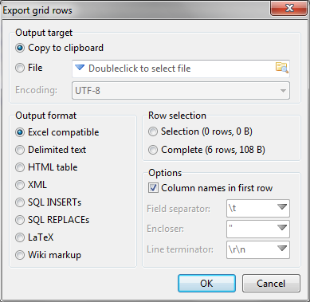
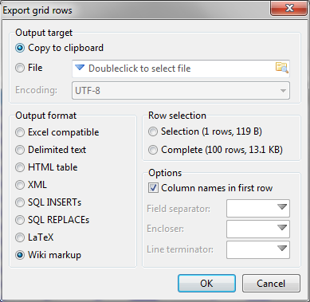

Hora da entrevista
Você nem sempre saberá o que está procurando. Nem sempre terá um objetivo definido. Muitas vezes você se colocará diante de uma grande quantidade de informações e não saberá o que procurar nelas. Vamos passar por um caso assim agora para tentar treinar a paixão por bancos de dados. Devemos insistentemente fazer perguntas a essas informações tentando encontrar padrões relevantes na perspectiva do jornalismo, elementos que possam formar uma matéria, seja uma pequena nota, ou uma manchete.
Para entender o entrevistado, leia o dicionário de variáveis com atenção para saber que tipos de dados esperar de cada tabela.
Exploração
Vamos começar por testes mais simples. Vejamos quem foram os mais votados das eleições de 2010. Para isso, vamos trabalhar com a tabela “tb_eleicoes_10_dados”. Clique sobre o nome da coluna que quiser ordenar. No caso, clique sobre “votos”.

Com uma leitura cuidadosa do dicionário e após algum tempo de observação na tabela, você deve notar que cada linha representa a votação de um candidato em uma determinada zona. Essa forma de organizar a informação pode ser conveniente ou inconveniente, dependendo do objetivo que tivermos com os dados. Para conhecermos os candidatos mais votados, ela deve ser um problema, mas podemos recriar essa arquitetura em SQL.
Logo acima da tabela, você pode usar o botão “Sorting” para ganhar mais controle sobre a forma como a tabela está sendo ordenada na visualização. Observe que isso é apenas uma visualização. A ordem em que os dados estão armazenados no banco não muda, pois independe da ordenação que você faça. Mas, se você quiser salvar uma visualização para seus dados, precisará exportar isso de alguma forma. Vamos cobrir esse tópico mais adiante.
Como falar SQL
Condições e filtros
Para alcançarmos flexibilidade, precisaremos escrever em SQL. Clique na aba “Query”. Vamos tentar conversar com nossa tabela diretamente.
Consideremos que o que se quer saber é quantos votos cada candidato recebeu nas eleições de 2010. Como você já deve ter notado, os códigos de zonas se repetem muitas vezes nessa tabela e, dessa forma, os votos de um mesmo candidato estão espalhados em várias linhas.
SELECT votos, can_id FROM tb_eleicoes_10_dados
Esse comando vai exibir apenas as colunas “votos” e “can_id”. Logo de saída percebemos algo estranho. Há candidatos com código “0”. Procurando no dicionário de variáveis, você vai descobrir que os candidatos têm seus números correspondentes indicados na tabela “candidatos”. No entanto, não há nenhuma menção ao código “0” lá. Isso pode ser uma inconsistência no banco, mas precisamos estudá-la primeiro. Escreva o comando a seguir na aba “Query” e pressione “F9” para executar.
SELECT votos, can_id FROM tb_eleicoes_10_dados WHERE can_id = 0
Abaixo da área de tabelas, onde ficam escritos os comandos enviados ao servidor, você também pode ver as respostas entregues. Verifique ali o número de linhas que a resposta contém. Você deve receber 51.076 linhas, todas com o valor “can_id” = 0.
Vamos estudar essa resposta. Em “tipo” e “tipo2” são especificados o tipo de voto recebido pelo suposto candidato. No dicionário de variáveis, você verá que os valores possíveis para esse campo estão tipificados na referência 4010 da “tb_formato_valor”. Essa tabela guarda os significados de vários dos números que encontraremos a seguir. Mantenha isso em mente.
Mais tarde, vamos aprender a fundir essas tabelas de modo a facilitar a leitura. Por hora, vamos apenas consultar a “tb_formato_valor” para conhecer os tipos de voto possíveis e seus números correspondentes.
Vamos fazer a pesquisa pelo HeidiSQL. Abra a tabela e clique com o botão direito do mouse sobre qualquer um dos valores na coluna “fmt_cod”.

Dê uma olhada nas opções do submenu “Quick Filter”. A maior parte delas é autoexplicativa e, sempre que você selecionar alguma, verá seu comando correspondente aparecer em uma nova caixa de texto logo acima da tabela. Nesse local, você pode modificar a expressão manualmente e refinar sua busca.
Operadores
O operador “LIKE” funciona como um “igual”, mas com uma peculiaridade: o símbolo de porcentagem que pode acompanhá-lo. Ele serve para indicar que não faz diferença para o filtro se há ou não informações antes ou depois dos caracteres especificados, dependendo da posição do símbolo.
Por exemplo, uma busca com o seguinte filtro exibirá todas as linhas em que o número “40” aparece no campo “fmt_cod”, independentemente de estar no começo, no meio ou no final do número.
fmt_cod LIKE '%40%'
Se deixar o símbolo apenas antes, o filtro só exibirá linhas com “40” no final do número “fmt_cod”. Se deixar depois, só vão aparecer linhas com “40” no começo. Ou seja, o símbolo “%” significa “qualquer coisa nesta posição”.
Procurando por “4010”, o número especificado no dicionário de variáveis, podemos ver os tipos de votos permitidos na “tb_eleicoes_10_dados”. Como vamos precisar dessas informações enquanto visualizamos outra tabela, copie e cole essas linhas para o Excel. Para isso, clique em “Tools” > “Export grid rows”. As opções padrão são o suficiente para isso, mas você deve cutucá-las mais tarde para conhecer a flexibilidade com que pode exportar as tabelas que montou com ajuda da linguagem SQL. Mais adiante, falaremos novamente sobre exportar dados.

De volta à “tb_eleicoes_10_dados”, clique na aba “Query” para continuarmos a análise anterior. Expanda os campos visíveis declarando-os após o “SELECT”.
SELECT votos, can_id, tipo, tipo2 FROM tb_eleicoes_10_dados WHERE can_id = '0'
É compreensível que todos os tipos de votos, exceto o nominal, não tenham um número de identificação do candidato associado, lembrando que os outros tipos são “Abstenção” (5), “Voto Nulo” (4), “Voto em Branco” (3) e “Voto na Legenda” (2). De forma que só teremos um comportamento inesperado nessas linhas se alguma delas contiver “can_id” = 0 e “tipo” = 1, ou seja, se alguma delas não souber apontar o número de um candidato para o qual foram computados certos votos nominais. Vamos testar essa tese.
SELECT votos, can_id, tipo, tipo2 FROM tb_eleicoes_10_dados WHERE can_id = '0' and tipo = '1'
Essa query não deve retornar nenhuma linha, o que certifica que a ausência de código de identificação de candidatos em parte delas não é um erro, mas sim uma informação.
Outra dúvida deve surgir agora: qual a diferença entre “tipo” e “tipo2” nessa tabela. Como acontecerá frequentemente ao lidar com bancos de dados públicos, as funções de certos campos nem sempre estão claras e esse é um caso.
Pelo dicionário de variáveis, somos levados a crer que os dois campos têm o mesmo significado, ou seja, se referem ao tipo de voto registrado na linha. No entanto, não há como os votos serem de dois tipos ao mesmo tempo. Para analisar se essa aparente duplicidade de campos pode criar problemas na leitura dos dados, precisamos verificar se há linhas em que “tipo” e “tipo2” se referem a duas formas diferentes de voto ao mesmo tempo. Se isso acontecer, não poderemos considerar a tabela confiável, ou porque ela está errada ou porque não a entendemos completamente.
SELECT votos, can_id, tipo, tipo2 FROM tb_eleicoes_10_dados WHERE tipo != tipo2
O operador “=” precedido por um ponto de exclamação significa “diferente”. O que perguntamos nessa query é em que linhas os campos “tipo” e “tipo2” são diferentes um do outro. Devem aparecer 15.010 linhas, todas com “0” no campo “tipo2”.
Dado que esse número não tem referência própria, podemos assumir que não é necessário levá-lo em conta. Como essa característica não implica em contradições no banco, ainda podemos considerá-lo confiável.
É preciso pontuar que o banco muito provavelmente tem uma boa razão para ter sido estruturado dessa forma. Um banco de dados bem feito está pronto para lidar com situações adversas com relação à organização de seus elementos, pois o custo de reorganizar milhões de linhas de bancos antigos pode ser muito alto.
Isso pode ser preparação para um cenário futuro em que um mesmo voto seria de mais de um tipo ao mesmo tempo, ou mesmo pode ser efeito de uma época passada do sistema eleitoral em que um voto realmente poderia ser assim. Lembre-se que isso também está ligado ao próprio conceito de “tipo” de voto, que também pode ter sido diferente no passado dentro da perspectiva do banco.
Descobrindo relações de grandeza
Vamos tentar reunir algumas informações mais básicas de nossos dados para passarmos a confiar mais neles. Hora de procurar informações que sejam facilmente verificáveis em outras fontes. Quantos votos foram computados no estado de São Paulo nas eleições de 2010?
O papel das “querys” em nosso trabalho vai muito além da filtragem de tabelas. Elas, além de filtrarem e até mesmo reestruturarem dados, podem também fazer cálculos com o conteúdo das linhas. Vamos usar a função de soma, “SUM”, para descobrir a quantidade de votos.
SELECT SUM(votos) FROM tb_eleicoes_10_dados
A resposta do banco será “212.147.420”. É preciso ler criticamente qualquer resultado numérico em uma análise de dados. Os números podem parecer abstratos, mas eles carregam muito significado se o repórter estiver devidamente contextualizado e atento.
Esse número, por exemplo, supera a estimativa do Censo 2010 para a população de todo o Brasil (quase 191 milhões) e, portanto, não pode ser confundido com o número de cidadãos votantes no estado de São Paulo.
Para podermos confiar em nossos dados, precisamos entendê-los muito bem. Essa tabela separa a quantidade de votos de candidato em cada zona. É preciso lembrar que uma mesma pessoa tem mais de um voto, pois deve escolher candidatos a mais de um cargo.
Em 2010, os eleitores escolheram dois senadores, um governador, um deputado estadual, um deputado federal e um presidente. Ou seja, cada pessoa teve direito a seis votos e mesmo que ela tenha escolhido por votar nulo ou em branco para certos cargos, o voto foi computado e deve aparecer nessa tabela. Além disso, essa tabela também abrange o segundo turno, portanto devemos tomar mais esse cuidado ao tentar resgatar a informação sem inflá-la.
Além de especificar que queremos apenas o primeiro turno, vamos escolher apenas um dos cargos para evitar a duplicação de votos. No caso, apontamos o cargo “3”, governador.
SELECT SUM(votos) FROM tb_eleicoes_10_dados WHERE turno = '1' and cargo = '3'
A resposta, “30.289.723”, confere precisamente com o número no site do TSE. Para se certificar, use códigos de outros cargos e veja que o número continua o mesmo. A exceção fica com “senador”, mas é importante notar que em 2010 cada estado apontou dois novos senadores e, portanto, seus cidadãos tiveram dois votos para o mesmo cargo.
Contagens e grupos
Vamos descobrir agora quais cargos despertaram menos interesse dos paulistas e receberam mais votos inválidos. Para essa contagem, vamos ignorar as abstenções, pois quem se abstém de votar o faz para todos os cargos.
SELECT SUM(votos), cargo FROM tb_eleicoes_10_dados WHERE (tipo = '4' or tipo = '3') and turno = '1' GROUP BY cargo
Desta vez, estamos lidando com uma demanda um pouco mais complexa. Sempre que na query forem usadas cláusulas como “WHERE”, ou “GROUP BY”, ou ambas, procure ler e entender primeiro como elas estão limitando os resultados da busca, para depois entender como esses resultados são processados e exibidos na tela. Ou seja, leia de trás para frente.
“GROUP BY” serve para o banco de dados usar um determinado campo para tentar agrupar os resultados que serão exibidos na tela. No caso, como queremos reunir informações sobre cada cargo, agrupamos tendo esse campo como referência. Essa expressão sempre deve estar associada a uma função que faz cálculos em cima dos dados agregados.
Além disso, limitamos os resultados aos votos nulos e brancos. É importante observar que a condição “tipo = '4' or tipo = '3'” não precisava ficar entre parênteses neste caso, mas é bom manter o hábito de usá-los quando usamos mais de uma condição no “WHERE”.
Com esse método, fica claro que o cargo que mais recebeu votos inválidos foi senador, seguido de deputado estadual e deputado federal. Governador foi o cargo que mais atraiu votos válidos.
Vamos agora descobrir as faixas de escolaridade mais frequentes entre candidatos aos diferentes cargos das eleições de 2010. Para tanto, vamos usar desta vez a tabela “candidatos”. Poderíamos continuar na mesma tabela em que estávamos, pois ela contém os dados de escolaridade.
SELECT ano, inst, COUNT(inst) FROM candidatos WHERE (ano = '2010' and turno = '1') GROUP BY inst
Com ajuda da expressão “GROUP BY”, agrupamos os diferentes níveis de escolaridade, mas desta vez, em vez de somar os conteúdos reunidos, como fizemos no caso anterior, nós vamos contar suas ocorrências.
Quando quisemos fazer a soma de votos reunidos por certos grupos, nós tivemos que usar a função “SUM” para somar os conteúdos dos campos agrupados, mas desta vez não queremos fazer essa soma, pois não há razão para somarmos números de identificação de escolaridade. Desta vez, queremos saber em quantas linhas cada número aparece, dai a utilidade de “COUNT”. Desse resultado, percebemos, por exemplo, que 41 candidatos sabiam apenas ler e escrever.
Fazendo experiências como uma query simples, podemos aprender mais sobre esses candidatos que nos chamaram a atenção.
SELECT * FROM candidatos WHERE ano = '2010' and turno = '1' and inst = '12' and sit_pos = '1'
Usando as várias combinações possíveis para a “sit_pos” (situação após as eleições), percebemos que o único titular eleito com essa escolaridade em 2010 foi Tiririca. Além dele, 12 suplentes, maioria do PMDB, também estão nesse nível.
Lembre-se que o asterisco após o “SELECT” faz todas as colunas da tabela serem exibidas.
Cruzamentos de tabelas
Com ajuda de SQL, podemos chamar resultados de mais de uma tabela ao mesmo tempo. No banco que estamos estudando, por exemplo, fundir tabelas é necessário para podermos ter uma leitura completa de seus dados. Até agora, temos comparado manualmente números de identificação de uma tabela com outra. Mas agora, vamos tornar esse cruzamento automático.
Em vez de consultar cada uma manualmente para conhecer o significado de certos números, você poderá recriar suas estruturas com números substituídos por seus significados correspondentes. Essa nova tabela só existirá temporariamente. Não estamos criando tabelas novas, estamos criando visualizações para as tabelas existentes.
Em “tb_eleicoes_10_dados”, por exemplo, os nomes dos candidatos não estão escritos com seus votos, o que cria dificuldades para a leitura. A informação que está nessa tabela é apenas o “can_id”, número de identificação do candidato, que tem sua correspondência especificada na tabela “candidatos”.
O MySQL tem vários usos, mas esse é um dos momentos em que o sistema realmente mostra seu potencial no trabalho jornalístico. O cruzamento necessário para entendermos a informação com mais clareza não pode ser feito por um software como o Excel. Para isso, precisamos de um banco de dados relacional, ou seja, que é capaz de estabelecer relações entre conteúdos que estão guardados separadamente.
Vamos fazer esse cruzamento com a expressão “JOIN”. Para tanto, além de selecionar os campos que você quer visualizar, você também precisa dizer qual campo das tabelas pode ser usado para emendar as linhas.
Seleção de campos:
SELECT candidatos.*, tb_eleicoes_10_dados.votos
Note que, como estamos trabalhando com mais de uma tabela ao mesmo tempo, precisamos ser mais específicos quando nos referimos às colunas. Nessa situação, sempre escreva o nome da tabela seguida do nome do campo com um ponto entre os dois.
No exemplo acima, “candidatos.*” faz referência a todos os campos da tabela “candidatos” e “tb_eleicoes_10_dados.votos” chama apenas o campo “votos” da tabela “tb_eleicoes_10_dados”.
Também é possível escrever dessa forma em querys que não usem “JOIN”, apesar de não ser necessário.
FROM tb_eleicoes_10_dados RIGHT JOIN candidatos ON candidatos.can_id = tb_eleicoes_10_dados.can_id
A chave da união de tabelas está na expressão “JOIN”. Você deve escrever o nome da primeira tabela, seguido de “LEFT JOIN” ou “RIGHT JOIN” e depois o nome da segunda tabela. Essa forma de escrever vai definir qual tabela é prioritária dentro da requisição. Nesse caso, por exemplo, “candidatos” tem a prioridade, ou seja, todas as linhas dessa tabela vão aparecer no resultado final e apenas as linhas da “tb_eleicoes_10_dados” que puderem completar esses dados é que serão exibidas.
A distinção entre “LEFT” e “RIGHT” pressupõe que nem todas as linhas das duas tabelas unidas tenham correspondência mútua e dá a prioridade a uma das tabelas, em vez de exibir todas as linhas das duas incluindo as que não correspondência.
No nosso caso, se escrevêssemos “LEFT JOIN”, teríamos no resultado linhas de votos inválidos, como brancos e nulos, além de votos em coligações e partidos. Essas linhas têm o “can_id” = 0, e, portanto, não podem guardar qualquer correspondência com a tabela candidatos. Nesse caso, os campos que faltam apareceriam com o valor “NULL”.
Após o “ON”, deve-se explicar como as duas tabelas se conectam. No caso, é o campo “can_id” que guarda a correspondência de linhas entre as duas tabelas.
WHERE candidatos.ano = '2010' and tb_eleicoes_10_dados.votos != 'NULL' LIMIT 100
A cláusula “WHERE” está aí para nos assegurarmos de que só linhas de 2010 serão pegas da tabela de candidatos.
Como estamos fazendo cruzamentos com tabelas muito grandes, é uma boa ideia limitar os resultados enquanto não precisarmos da tabela completa (que certamente teria centenas de milhares de linhas). A cláusula “LIMIT” entra em ação depois que o servidor já processou a resposta que vai dar à sua query e determina quantas linhas devem ser exibidas no total.
Veja como fica a query completa. Seja paciente, pois dependendo da máquina em que você estiver trabalhando, o resultado pode demorar mais de um minuto para ser processado pelo banco. Lembre-se que estamos pedindo para nosso servidor que compare duas tabelas muito grandes. Se você ainda não escolheu os índices das tabelas, agora isso vai fazer diferença no desempenho da ferramenta.
Daqui em diante, as SQLs serão exibidas com indentações. Esse é apenas um recurso estético para facilitar a leitura dos comandos e não tem qualquer influência sobre os resultados obtidos do banco.
SELECT candidatos.*, tb_eleicoes_10_dados.votos
FROM tb_eleicoes_10_dados
RIGHT JOIN
candidatos ON candidatos.can_id = tb_eleicoes_10_dados.can_id
WHERE
candidatos.ano = '2010'
and tb_eleicoes_10_dados.votos != 'NULL'
LIMIT 100
Aqui, é mais uma vez necessário, além de conhecer bem o banco que se está usando, também entender o que se está pedindo para o banco.
Nossa query é capaz de cruzar as linhas das duas tabelas e, aparentemente, o resultado tem relevância, pois relaciona os dados completos dos candidatos às suas votações no ano de 2010. No entanto, devemos lembrar que a “tb_eleicoes_10_dados” divide os votos por candidato e zona eleitoral. Sendo assim, o numero de votos associado a cada uma das linhas retornadas pela query anterior é, na verdade, a votação em apenas uma das zonas eleitorais.
Para se certificar dessa tese, vamos acrescentar a expressão “ORDER BY nomecand ASC” ao final da query. Esse complemento vai organizar os resultados usando a coluna “nomecand” como referência e em ordem ascendente. Dessa forma, vai ficar mais fácil ver as repetições de nomes de candidatos.
SELECT candidatos.*, tb_eleicoes_10_dados.votos
FROM tb_eleicoes_10_dados
RIGHT JOIN
candidatos ON candidatos.can_id = tb_eleicoes_10_dados.can_id
WHERE
candidatos.ano = '2010'
and tb_eleicoes_10_dados.votos != 'NULL'
ORDER BY nomecand ASC LIMIT 100
Para conseguirmos o número total de votos por candidato, vamos combinar novamente as ferramentas “GROUP BY” e “SUM”. Agrupando as linhas com o campo “can_id”, usamos o “SUM” para mostrar o total de votos.
Nesse caso, para termos uma leitura mais amigável dos resultados, vamos mudar o nome da coluna que vai trazer os números somados de votos. Dentro do “SELECT”, tanto com campos como com tabelas, podemos criar apelidos (“alias”) com a expressão “AS”. Vamos chamar a soma resultante de “votos_totais”. Essa mudança não afeta a tabela real, mas apenas facilita a visualização, assim como o “JOIN”.
Ao final, vamos escrever um “ORDER BY” ascendente para verificarmos quais candidatos tiveram menos votos, o que pode ser jornalisticamente relevante.
SELECT candidatos.*, SUM(tb_eleicoes_10_dados.votos) as votos_totais
FROM tb_eleicoes_10_dados
RIGHT JOIN
candidatos ON candidatos.can_id = tb_eleicoes_10_dados.can_id
WHERE
candidatos.ano = '2010'
and tb_eleicoes_10_dados.votos != 'NULL'
GROUP BY can_id
ORDER BY votos_totais
ASC LIMIT 100
Vemos que o candidato menos votado de 2010 teve apenas 5 votos. Vamos descobrir agora quem foi o politico eleito menos votado do ano no estado de São Paulo.
Para conseguirmos esse resultado, devemos incluir o campo “sitpos” da “tb_eleicoes_10_dados” na query. Conforme explicado no dicionário de variáveis, esse campo tem seus valores possíveis especificados na “tb_formato_valor” na referência 4006. Vamos usar esse campo para unir mais essa tabela à nossa query. Teoricamente, com “JOINS” podemos unir tabelas indefinidamente, bastando apenas repetir a mesma sintaxe.
Com mais essa união, poderemos ler diretamente no resultado final a situação pós-eleitoral do candidato.
SELECT candidatos.*, SUM(tb_eleicoes_10_dados.votos) as votos_totais, tb_formato_valor.fmt_desc
FROM tb_eleicoes_10_dados
RIGHT JOIN
candidatos ON candidatos.can_id = tb_eleicoes_10_dados.can_id
LEFT JOIN
tb_formato_valor ON tb_eleicoes_10_dados.sitpos = tb_formato_valor.fmt_val
WHERE
candidatos.ano = '2010'
and tb_eleicoes_10_dados.votos != 'NULL'
and tb_formato_valor.fmt_cod = '4006'
and tb_formato_valor.fmt_val = '1'
GROUP BY can_id
ORDER BY votos_totais
ASC LIMIT 100
Como exportar dados
Apesar de serem apenas criações temporárias, tanto as tabelas que resultam de “JOINS” quanto as que surgem a partir de qualquer outra filtragem via querys podem ser extraídas do servidor MySQL e salvas em formatos mais tradicionais, como CSV.
Para exportar os dados obtidos, selecione uma linha qualquer do grid e escolha o menu “Tools” > “Export grid rows”.
Você pode tanto levar o conteúdo para a área de transferência do Windows selecionando “Copy to clipboard”, de onde poderá colar os dados em outros programas, quanto salvar suas linhas diretamente em um novo arquivo.
Em “output format”, o destaque é das opções “Excel compatible” e “Delimited text”. Ambas permitem exportar os dados em um arquivo com terminação “.csv”, com a diferença de a primeira dar prioridade para a compatibilidade com o Excel, enquanto a segunda permite a escolha livre dos separadores de texto. Como exemplo, as tabelas do Governo Aberto que usamos neste tutorial têm como “Field Separator” o ponto-e-vírgula, aspas como “Encloser” e “\r\n” (quebra de linha) como “Line terminator”.
